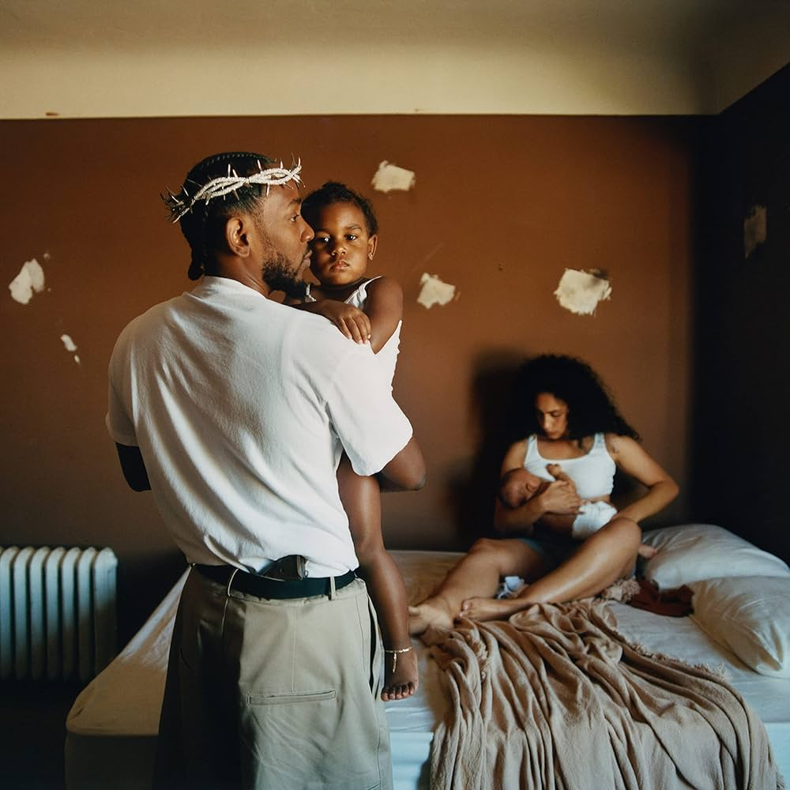

Mr. Morale & The Big Steppers

Esse não é um álbum pra tocar no carro. É quase uma sessão de terapia em forma de música. Aqui Kendrick fala sobre:
Trauma geracional, Abuso, Infidelidade, Masculinidade tóxica, Cancelamento, Paternidade, Cura
É o Kendrick desmontando a própria imagem. O álbum é dividido em dois lados:
The Big Steppers
Representa:
Ego, Defesa, Comportamentos repetitivos, Mecanismos de proteção
Mr. Morale
Representa:
Vulnerabilidade, Terapia, Cura, Responsabilidade
É como se fosse:
Persona pública vs. Homem real.
1. United in Grief
Ele começa falando:
“Eu tenho mil hábitos pra lidar com a dor.”
Tema:
Consumo, Sexo, Compras, Trabalho
Ele mostra como sucesso não resolve trauma.
2. N95
“Take off the fake deep.”
Ele manda tirar:
Ego, Status, Aparência
É crítica à superficialidade, inclusive dele mesmo.
3. Worldwide Steppers
Extremamente desconfortável. Ele fala sobre:
Desejos reprimidos, Racismo, Fetiches, Culpa
É propositalmente perturbadora.
4. Die Hard (feat. Blxst, Amanda Reifer)
Sobre confiança no relacionamento. Pergunta:
“Você ainda vai me amar quando eu estiver vulnerável?”
5. Father Time (feat. Sampha)
Uma das mais importantes. Ele fala sobre o pai ensinando ele a ser duro. Tema:
Masculinidade, Repressão emocional, Dificuldade de demonstrar afeto
É sobre como homens aprendem a não chorar.
6. Rich (Interlude)
Mostra Kodak Black falando. Representa:
Trauma sem tratamento.
7. Rich Spirit
Ele fala sobre riqueza espiritual vs material.
Menos ostentação. Mais consciência.
8. We Cry Together (feat. Taylour Paige)
Uma briga tóxica crua, É desconfortável, Sem filtro, Quase teatro. Mostra relacionamento destrutivo.
9. Purple Hearts (feat. Ghostface Killah, Summer Walker)
Sobre imperfeição no amor. Amor machuca.
Mas ainda é necessário.
10. Count Me Out
Ele fala sobre:
Ansiedade, Medo, Auto-sabotagem
“Eu me amo.”
É uma afirmação de cura.
11. Crown
“Você não pode agradar todo mundo.”
Aqui ele aceita:
Ele não é salvador. Isso é importante porque por anos colocaram ele como voz moral do rap.
12. Silent Hill (feat. Kodak Black)
Vibe mais leve. Mas ainda fala sobre manter energia limpa e evitar distração.
13. Savior (feat. Baby Keem, Sam Dew)
“Eu não sou seu salvador.”
Ele destrói a ideia de que artistas devem ser líderes espirituais. Mensagem:
Não idolatre celebridades.
14. Auntie Diaries
Extremamente corajosa. Ele fala sobre:
Parentes trans, Linguagem ofensiva, Aprendizado, Evolução
É sobre errar e crescer.
15. Mr. Morale (feat. Tanna Leone)
Ele confronta:
Trauma geracional, Cultura de violência, Padrões herdados
É o ponto mais terapêutico do álbum.
16. Mother I Sober (feat. Beth Gibbons)
Talvez a música mais pesada da carreira dele. Ele fala sobre:
Abuso, Silêncio familiar, Trauma transmitido, Cura, Ele chora, Admite dor, Perdoa.
É libertador.
17. Mirror
Fecha com:
“Eu escolho a mim mesmo.”
Depois de anos sendo “voz do povo”, ele decide:
Priorizar sua própria saúde mental.
O que o álbum realmente diz?
Kendrick está dizendo:
Eu não sou perfeito, Eu não sou salvador, Eu sou um homem quebrado tentando curar a si mesmo.
É o álbum mais vulnerável dele.
Sem personagens, Sem metáforas grandiosas, Sem discurso político pesado, Só trauma.
E tentativa de cura.